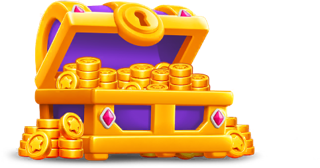
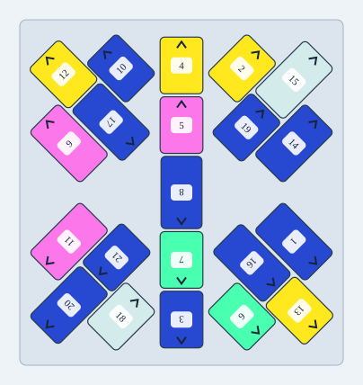

Game Design
Vòng chơi, mục tiêu, trạng thái thắng/thua và các lớp tiến trình của Sandy Go!.

Biểu tượng gốc trích từ game.
Trải nghiệm cốt lõi
Sandy Go! kết hợp giải phóng xe trong bãi với thu gom cát theo màu. Người chơi chạm một xe để đưa xe ra đường. Xe cần có lối thoát và đường còn chỗ; khi đi qua vùng hút, xe thu cát cùng màu. Xe đầy rời luồng, giải phóng khả năng đưa xe tiếp theo ra. Mục tiêu là xử lý bức tranh cát và các xe của màn theo điều kiện hoàn tất của bộ luật.
Hai bài toán diễn ra cùng lúc: xe nào có thể thoát bãi? và màu xe nào có thể hút được cát lúc này? Một xe đi được về mặt hình học vẫn có thể là lựa chọn kém nếu chiếm chỗ trên đường mà không thu được màu đang tiếp cận.
Nguồn đối chiếu
StageEngine · Road · TruckGrid
Kiểm chứng quy tắc
Một màn gồm những gì?

| Thành phần | Vai trò | Thông số trong bộ màn |
|---|---|---|
| Bức tranh cát | Nguồn màu cần thu gom | Lưới pixel và bảng màu riêng từng màn |
| Bãi xe | Tạo phụ thuộc lối thoát theo vị trí, kích thước và hướng | Ba dạng xe: Truck, MiniVan, Bus; có 24 hướng góc |
| Đường vòng | Giới hạn số xe hoạt động cùng lúc | Sức chứa cơ sở 5 xe trong toàn bộ 250 màn |
| Cơ chế đặc biệt | Thêm ràng buộc thông tin, nhóm, vị trí hoặc thời gian | Ẩn màu, khóa/chìa, quay đầu, xích, thang nâng, đụn cát, cứu hỏa |
| Hỗ trợ | Can thiệp vào màu, lối thoát hoặc sức chứa | Bốn booster trong màn; hai loại trước màn có trong dữ liệu nhưng bị loại khỏi mở khóa thường |
Thắng, kẹt và giới hạn thời gian
| Tình trạng | Ý nghĩa gameplay | Cách đọc đúng |
|---|---|---|
| Hoàn tất | Bộ kiểm tra xác nhận bàn đã xử lý xong | Không dùng một phép kiểm “hết xe ban đầu” để thay cho toàn bộ luật. |
| Kẹt đường | Xe đang chiếm luồng nhưng không còn khả năng thu gom để tạo chỗ | Đường đầy chưa tự động đồng nghĩa thua ngay; còn xét xe đang rời đi, cát đang chuyển động và khả năng thu gom. |
| Kẹt bãi | Không còn xe chạm được hoặc bộ phát xe có thể tiến triển | Khác với việc một xe riêng lẻ đang bị chắn. |
| Không tiến triển | Cơ chế kiểm tra trạng thái không thay đổi đủ lâu | Không coi đây là số lượt thao tác cố định. |
| Hết giờ cứu hộ | Xe cứu hỏa còn trong bãi khi bộ đếm về 0 | Đây là áp lực thời gian của cơ chế cứu hỏa, không phải mọi màn đều có đồng hồ tổng. |
Kiểm chứng quy tắc
StageEngine · EvaluateTermination · StageEngine · CheckSoftLock · StageEngine · TickRescueTimer
Tiến trình và lớp mục tiêu ngoài màn
250 màn được tải theo danh mục. Sau màn 250, game quay vòng các màn thiết kế 101–250; số màn hiển thị vẫn tiếp tục tăng. Ngoài tiến trình chính còn có chuỗi thắng, đường thưởng theo điểm, leo tháp, đấu loại, đua thuyền, pass, thử thách ngày và cúp tuần. Từng hoạt động có điều kiện mở và trạng thái kích hoạt riêng.
| Phần cần tìm hiểu | Đi tới |
|---|---|
| Bố cục, màu, xe, cơ chế và level lặp | Chi tiết level |
| Vật thể chặn gì và mở bằng cách nào | Vật thể & cơ chế |
| Tài nguyên, điểm mua, giá và hỗ trợ | Kinh tế & quảng cáo · IAP |
| Vòng chơi, mốc và thưởng của hoạt động | Events |
| Thử thách ngày và quà đăng nhập | Hằng ngày |
Nhận định thiết kế
Từ dữ liệu: cùng sức chứa đường 5 xe nhưng số xe, số màu và phụ thuộc hình học thay đổi theo màn. Các cơ chế mới lần lượt xuất hiện trong tập bố cục, sau đó tái sử dụng ở các màn muộn.
Nhận định: sức ép chính đến từ việc đưa đúng màu lên đường vào đúng thời điểm. Khóa/chìa và thang nâng tạo thứ tự ưu tiên; xe quay đầu làm thay đổi dự báo; xích buộc cân nhắc dung lượng theo nhóm; cứu hỏa tạo mục tiêu khẩn cấp. Các vòng thưởng ngoài màn có thể khuyến khích kéo dài phiên chơi, còn booster và chơi tiếp đặt quyết định chi tiêu tại điểm khó. Chưa có dữ liệu chơi thực tế để đánh giá tỷ lệ thắng hoặc hiệu quả thương mại.